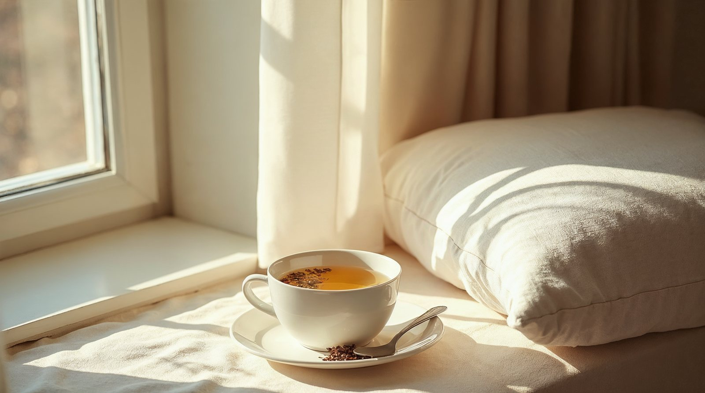
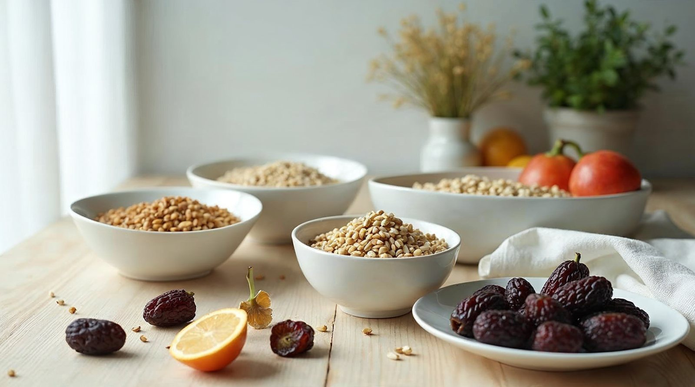
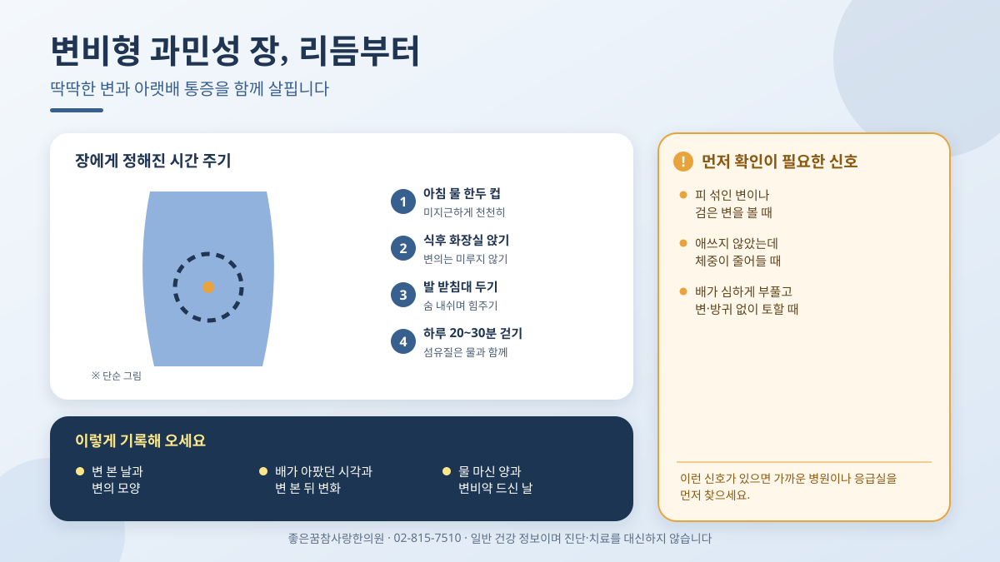

이종호 한의사 감수좋은꿈참사랑한의원 대표원장 (한의사 면허번호 19769)발행 2026-11-26 · 수정 2026-11-26
이 글의 차례
저녁 무렵이면 아랫배가 풍선처럼 부풀어 올라 바지 단추가 답답해집니다. 화장실에 앉아 한참을 힘줘 봐도 작은 덩어리 몇 개뿐이고, 일어서면 여전히 남은 느낌이 듭니다. 그렇게 사흘, 나흘이 지나면 배가 콕콕 쑤시고 마음까지 무거워집니다.
진료실에서 이런 이야기를 하시는 분들은 대개 '그냥 변비'라고 생각하고 오랫동안 혼자 버텨 오셨습니다. 그런데 변비와 함께 배가 아프고, 변을 보면 그 아픔이 조금 풀리는 흐름이 반복된다면 변비형 과민성 장을 함께 생각해 볼 수 있습니다.
과민성 장은 장의 생김새에는 뚜렷한 이상이 없는데 장이 신호에 예민하게 반응하는 상태입니다. 그 가운데 딱딱한 변, 드문 배변, 배의 통증과 더부룩함이 중심인 경우를 변비형이라고 나눠 부릅니다.
변비형은 '안 나온다'는 답답함과 '배가 아프다'는 불편이 함께 있어서 하루 종일 배에 신경이 쓰입니다. 그래서 저는 화장실 횟수만큼 배가 언제, 어디가, 어떻게 불편한지를 함께 여쭙습니다.
단순 변비와 변비형 과민성 장은 무엇이 다를까요
변비는 변이 드물거나 딱딱하고, 볼 때 힘이 많이 드는 상태를 넓게 부르는 말입니다. 변비형 과민성 장은 여기에 '배의 통증'이 중심에 있다는 점이 다릅니다. 배가 아프다가 변을 보면 조금 편해지고, 변을 못 보는 날이면 통증과 더부룩함이 커집니다.
- 단순 변비: 변이 드물고 딱딱하지만 배의 통증은 크지 않은 경우가 많습니다
- 변비형 과민성 장: 배가 아프거나 불편한 날이 일주일에 하루 이상 몇 달째 이어지고, 배변과 함께 통증이 달라집니다
- 잔변감이 큰 경우: 변이 직장까지 내려와 있는데 잘 나오지 않는 배변 자세나 힘주는 방식의 문제가 겹치기도 합니다
- 약이나 다른 질환: 철분제, 일부 진통제, 갑상선 기능 저하처럼 변비를 만드는 원인이 따로 있기도 합니다
두 가지는 칼로 자르듯 나뉘지 않고 겹치는 경우가 많습니다. 이름을 정확히 붙이는 것보다, 내 배가 어떤 흐름으로 불편한지를 아는 것이 생활을 바꾸는 데에는 더 쓸모가 있습니다.
왜 변이 막히고 배는 아플까요
대장은 물결처럼 꿈틀거리며 내용물을 앞으로 밀어냅니다. 변비형 과민성 장에서는 이 물결이 고르지 않아, 어떤 구간은 너무 느리게 움직이고 어떤 구간은 쥐어짜듯 오그라들기도 합니다. 그 사이에서 변이 오래 머물며 물기를 빼앗겨 딱딱해집니다.
장이 예민하면 같은 양의 가스와 변에도 배가 더 부풀고 더 아프게 느껴집니다. 그래서 검사상 변이 아주 많이 쌓인 것은 아닌데도 배가 터질 것 같다고 느끼시는 분이 많습니다. 장의 감각이 볼륨을 크게 올려 둔 상태라고 생각하시면 이해가 쉽습니다.
긴장도 큰 몫을 합니다. 마음이 쫓기면 몸은 소화보다 버티기에 힘을 쓰고, 장의 움직임은 느려집니다. 바쁜 아침에 변의가 와도 참고 넘기는 일이 반복되면, 장은 점점 신호를 보내는 일조차 줄여 버립니다.
물과 움직임, 식사량이 줄어도 변은 쉽게 굳습니다. 다이어트로 끼니를 줄이신 시기, 겨울에 물을 덜 드시는 시기, 책상에 앉아만 지내는 시기에 변비형 불편이 커졌다는 분이 많습니다.
화장실에서의 자세와 습관
변비형 과민성 장에서는 화장실에 앉는 방식도 함께 살펴봅니다. 변기에 앉았을 때 무릎이 엉덩이보다 낮으면 직장과 항문이 만나는 각이 좁아져 힘을 많이 줘야 합니다. 발밑에 낮은 받침대를 두어 무릎을 조금 올리면 길이 한결 곧아집니다.
힘을 줄 때 숨을 꾹 참고 얼굴이 붉어질 만큼 밀어내는 분이 많습니다. 이렇게 하면 오히려 항문 쪽 근육이 함께 조여 잘 나오지 않습니다. 숨을 천천히 내쉬면서 배를 부드럽게 내미는 느낌으로 힘을 주는 편이 부담이 적습니다.
화장실에 휴대전화를 들고 들어가 오래 앉아 있는 습관도 살펴봅니다. 10분 넘게 앉아 있으면 항문 주변에 부담이 쌓여 치질이나 치열로 이어지기도 합니다. 5분쯤 앉아도 소식이 없으면 일어났다가 다음 신호를 기다리시길 권합니다.
변비약은 어떻게 생각하면 될까요
변비형 과민성 장으로 고생하시는 분들 가운데는 변비약을 오래 드셔 온 분이 많습니다. 장을 부드럽게 하는 약, 장 속에 물을 끌어들이는 약, 장을 자극해 밀어내는 약처럼 종류가 다양하고, 각각 쓰는 상황이 다릅니다.
내과에서 처방받은 약이라면 안내받은 대로 드시면 됩니다. 사서 드시는 자극성 변비약을 자주 쓰게 되었다면 몇 번, 어떤 약을 드셨는지 적어 와 주세요. 약을 끊기보다, 생활에서 장의 리듬을 세우면서 약에 기대는 날을 조금씩 줄여 가는 쪽으로 함께 상의합니다.
섬유질 보충제는 물을 충분히 함께 드셔야 제 역할을 합니다. 물 없이 섬유질만 늘리면 오히려 배가 더 더부룩해지는 분도 계셔서, 처음에는 적은 양으로 시작해 천천히 늘려 보세요.

마음이 막히면 장도 막힙니다
변비형 과민성 장을 가진 분들께 여쭤 보면, 꾹 참고 버티는 일이 많은 시기에 배가 더 무거워졌다는 이야기를 자주 듣습니다. 하고 싶은 말을 삼키고, 쉬고 싶은 마음을 미루는 날이 이어지면 몸도 함께 움츠러듭니다.
배를 만져 보면 아랫배뿐 아니라 명치와 옆구리까지 단단하게 굳어 있는 분이 많습니다. 숨이 가슴 위쪽에서만 얕게 오가고, 배로 숨을 쉬는 일이 거의 없습니다. 배가 숨과 함께 오르내리지 않으면 장도 그만큼 덜 움직이기 쉽습니다.
잠들기 전 누운 자리에서 배에 손을 얹고, 숨을 들이쉴 때 배가 손을 밀어 올리고 내쉴 때 내려가는 것을 느껴 보세요. 다섯 번에서 열 번이면 충분합니다. 장을 직접 움직이기보다 몸의 긴장을 풀어 주는 작은 습관입니다.
계절과 생활에 따라 달라지는 배
겨울에는 물을 덜 마시고 덜 움직이게 되면서 변비형 불편이 커지는 분이 많습니다. 실내 난방으로 몸의 물기가 더 빠져나가니, 목이 마르지 않아도 물을 조금씩 자주 드시는 습관이 도움이 됩니다.
여행이나 출장처럼 화장실 환경이 바뀌는 날에도 장은 쉽게 멈춥니다. 낯선 화장실이 불편해서 참게 되고, 끼니 시각도 흐트러지기 때문입니다. 떠나기 전날부터 물을 넉넉히 드시고, 도착한 다음 날 아침에 화장실에 앉을 여유를 미리 잡아 두세요.
여성분은 생리 전 일주일 사이에 변이 더 굳고 배가 더 부푸는 분이 많습니다. 날짜와 함께 적어 두시면 그 시기에 물과 걷기를 조금 더 챙길 수 있습니다. 출산 뒤나 갱년기처럼 몸이 크게 바뀌는 시기에도 장의 리듬이 달라지곤 합니다.

식사의 양과 기름도 함께 봅니다
변비가 걱정되어 먹는 양을 줄이는 분이 계신데, 장에 들어오는 양이 너무 적으면 밀어낼 거리 자체가 부족해집니다. 끼니를 거르지 않고 세 끼를 일정하게 드시는 것이 변의 양과 리듬을 만드는 기본입니다.
기름을 지나치게 피하는 것도 살펴봅니다. 적당한 기름은 변을 부드럽게 하고 장이 움직이는 신호를 줍니다. 나물을 무칠 때 들기름이나 참기름을 조금 두르고, 견과류를 한 줌 곁들이는 정도면 충분합니다.
과일은 껍질째 먹을 수 있는 사과, 배, 키위처럼 물기와 섬유질이 함께 있는 것을 권하는 편입니다. 다만 사람마다 맞는 과일이 달라서, 드신 뒤 배가 더 부풀었다면 그 과일은 양을 줄여 보세요.
먼저 이렇게 여쭙니다
배 이야기를 들으며, 저는 대략 이런 순서로 여쭙니다.
- 변은 며칠에 한 번, 어떤 모양으로 보시나요?
- 배는 주로 어디가, 하루 중 언제 불편한가요? 변을 보면 편해지나요?
- 변에 피가 묻거나 검은빛이 섞인 적은 없나요?
- 최근에 체중이 줄거나 변비가 갑자기 시작되지는 않았나요?
- 하루에 물은 얼마나 드시고, 얼마나 걸으시나요?
- 드시는 변비약이나 다른 약, 영양제가 있나요?
모두 정확히 기억하지 못하셔도 괜찮습니다. 일주일만 적어 오셔도 흐름이 훨씬 또렷해집니다.
일상에서 먼저 해 볼 수 있는 것
변비형 과민성 장은 장에게 '정해진 시간'을 만들어 주는 것부터 시작합니다. 장은 아침에 깨어나고 첫 식사 뒤에 크게 한 번 움직이는 경우가 많아서, 이 시간을 놓치지 않는 것이 중요합니다.
- 아침에 일어나 미지근한 물 한두 컵 마시기
- 아침 식사를 거르지 않고, 식후 10~20분 안에 화장실에 앉을 여유 만들기
- 변의가 오면 미루지 않고 바로 화장실 가기
- 발밑에 낮은 받침대를 두고 숨을 내쉬며 힘주기
- 하루 20~30분 걷기, 앉아 있는 시간이 길면 한 시간에 한 번 일어나기
- 채소, 잡곡, 해조류를 끼니마다 조금씩 늘리고 물도 함께 늘리기
섬유질을 늘렸는데 오히려 가스와 더부룩함이 심해진다면, 양파·마늘·콩·밀가루처럼 장에서 발효가 잘 되는 음식이 겹친 것일 수 있습니다. 한 가지씩 2주쯤 줄여 보며 차이를 적어 보세요.
배가 더부룩한 저녁에는 따뜻한 수건을 아랫배에 올리고, 배꼽 둘레를 시계 방향으로 천천히 쓸어 주는 것도 도움이 될 수 있습니다. 세게 누르기보다 손바닥 무게만 싣는 느낌이면 충분합니다.
한의원에서 함께 살필 수 있는 경우
- 내과 검사에서 큰 이상은 없다고 들었는데 변비와 아랫배 통증이 함께 이어지는 경우
- 변비약을 써도 배의 더부룩함과 묵직함이 잘 풀리지 않는 경우
- 긴장하거나 바쁜 시기마다 변이 막히고 배가 부풀어 오르는 경우
- 배와 손발이 차고 물을 마셔도 잘 붓고 몸이 무거운 경우
좋은꿈참사랑한의원에 오시면 먼저 아래 '먼저 확인이 필요한' 신호가 없는지부터 봅니다. 그다음 맥을 짚고 식사와 물, 대변, 잠, 긴장을 여쭈며, 배를 눌러 보며 뭉친 자리와 차가운 자리를 확인합니다.
진찰한 내용을 바탕으로 생활에서 바꿔 볼 것 하나와 함께 침, 온열 관리, 한약 상담 가운데 지금 상태에 맞는 것을 정합니다. 한약을 상의할 때는 드시는 약을 모두 확인하고 신중하게 정합니다. 내과에서 처방받은 약은 상의 없이 멈추지 않습니다.
임신 중이시거나 임신을 준비하고 계시다면 처음에 먼저 알려 주세요. 침과 한약 모두 그에 맞춰 조심스럽게 정하고, 필요하면 산부인과 선생님과 상의하시도록 안내합니다.
이렇게 기록해 오시면 상담이 쉬워집니다
변비형 과민성 장은 며칠 단위로 흐름이 바뀌어서, 짧게라도 적어 두시면 잘 보입니다. 2주 정도 적어 보세요.
- 변을 본 날과 시각, 변의 모양(딱딱한 덩어리, 보통, 묽음)
- 배가 아팠던 시각과 자리, 변을 본 뒤 달라졌는지
- 하루 물 마신 양과 걸은 시간
- 변비약을 드신 날과 약 이름
- 잠든 시각과 긴장했던 일정, 생리 주기(여성의 경우)
빠진 날이 있어도 괜찮습니다. 적어 오신 줄 가운데 유독 배가 무거웠던 날부터 함께 들여다보겠습니다. 기록이 쌓일수록 내 장이 어떤 날에 멈추는지가 하나씩 보이기 시작합니다.
배가 가벼운 날을 하나씩 늘려 가며
변비형 과민성 장은 오래 쌓인 습관과 긴장이 함께 얽혀 있어서, 하루아침에 풀리기보다 가벼운 날이 조금씩 늘어나는 쪽으로 나아가는 경우가 많습니다. 그 작은 변화를 알아차리는 것이 꾸준히 가는 힘이 됩니다.
변이 매일 나오지 않아도 괜찮습니다. 이틀에 한 번이라도 힘들이지 않고 편하게 보고, 배가 덜 아프다면 충분히 좋은 흐름입니다. 숫자보다 배가 얼마나 편한지를 기준으로 삼아 보세요.
며칠 화장실에 못 갔다고 조급해져 한꺼번에 많은 양의 약이나 섬유질을 드시면 배가 더 놀랄 수 있습니다. 하던 습관을 차분히 이어 가면서 기다려 주는 것도 장을 돌보는 방법입니다.
이번 주에는 아침 물 한 컵, 식후 화장실에 앉아 보기, 발 받침대 두기 가운데 하나만 골라 보세요. 다음에 오시면 그 일주일 동안 배가 어땠는지부터 여쭙겠습니다.
이런 증상은 먼저 확인이 필요합니다
- 변에 피가 섞여 나오거나 검은 변을 보고, 애쓰지 않았는데 체중이 줄어드는 경우
- 배가 심하게 부풀어 오르고 방귀와 변이 전혀 나오지 않으면서 토하는 경우
이런 신호가 있으면 한의원보다 가까운 병원이나 응급실을 먼저 찾으세요.
함께 읽으면 좋은 글
- 배가 자주 아프고 설사·변비가 반복되는 과민성 장 증후군은 어떻게 살피나요?
- 배에 가스가 차고 풍선처럼 부푸는 복부 팽만은 어떻게 나눠 살피나요?
- 변을 보고 나도 개운하지 않은 잔변감, 하루에 여러 번 화장실에 갈 때는 어떻게 살피나요?
- 치질 때문에 항문이 붓고 피가 묻어날 때 무엇을 구분하고 어떻게 살피나요?
- 한의원 문진에서 몸의 따뜻함, 소화, 잠, 대소변, 통증은 왜 함께 묻나요?

여쭙는 것
- 변은 며칠에 한 번, 어떤 모양으로 보시나요?
- 배는 주로 어디가, 하루 중 언제 불편한가요? 변을 보면 편해지나요?
- 변에 피가 묻거나 검은빛이 섞인 적은 없나요?
생활에서 해 볼 것
- 아침에 일어나 미지근한 물 한두 컵 마시기
- 아침 식사를 거르지 않고, 식후 10~20분 안에 화장실에 앉을 여유 만들기
- 변의가 오면 미루지 않고 바로 화장실 가기
한의원에서 함께 살필 것
- 내과 검사에서 큰 이상은 없다고 들었는데 변비와 아랫배 통증이 함께 이어지는 경우
- 변비약을 써도 배의 더부룩함과 묵직함이 잘 풀리지 않는 경우
- 긴장하거나 바쁜 시기마다 변이 막히고 배가 부풀어 오르는 경우
먼저 확인이 필요한 신호
- 변에 피가 섞여 나오거나 검은 변을 보고, 애쓰지 않았는데 체중이 줄어드는 경우
- 배가 심하게 부풀어 오르고 방귀와 변이 전혀 나오지 않으면서 토하는 경우
한눈에 보는 표
| 구분 | 핵심 |
|---|---|
| 여쭙는 것 | 변은 며칠에 한 번, 어떤 모양으로 보시나요? 배는 주로 어디가, 하루 중 언제 불편한가요? 변을 보면 편해지나요? |
| 생활에서 해 볼 것 | 아침에 일어나 미지근한 물 한두 컵 마시기 아침 식사를 거르지 않고, 식후 10~20분 안에 화장실에 앉을 여유 만들기 |
| 한의원에서 함께 살필 것 | 내과 검사에서 큰 이상은 없다고 들었는데 변비와 아랫배 통증이 함께 이어지는 경우 변비약을 써도 배의 더부룩함과 묵직함이 잘 풀리지 않는 경우 |
| 먼저 확인이 필요한 신호 | 변에 피가 섞여 나오거나 검은 변을 보고, 애쓰지 않았는데 체중이 줄어드는 경우 배가 심하게 부풀어 오르고 방귀와 변이 전혀 나오지 않으면서 토하는 경우 |
자주 묻는 질문
변비약을 매일 먹어도 괜찮을까요?
처방받은 약이라면 처방한 선생님의 안내대로 드시면 됩니다. 사서 드시는 자극성 변비약을 자주 쓰신다면 횟수와 약 이름을 적어 와 주세요. 생활 리듬을 세우면서 약에 기대는 날을 줄여 가는 쪽으로 함께 상의합니다.
섬유질을 많이 먹으면 변비형 과민성 장이 풀리나요?
도움이 되는 분도 있지만, 갑자기 많이 늘리면 가스와 더부룩함이 커지기도 합니다. 물과 함께 조금씩 늘리고, 배가 더 불편해지면 종류와 양을 함께 조정해 보세요.
대장내시경은 언제 받아 보면 좋을까요?
변비가 최근 갑자기 시작되었거나 피가 섞인 변, 체중 감소, 가족 가운데 대장 질환이 있다면 내과에서 검사를 상의해 보시길 권합니다.
배를 문지르는 것이 도움이 되나요?
배꼽 둘레를 시계 방향으로 부드럽게 쓸어 주면 편안해진다는 분이 많습니다. 세게 누르지 말고, 문지를 때 통증이 커지면 멈추고 진료 때 말씀해 주세요.
좋은꿈참사랑한의원은 재진 때 지난번 이야기부터 이어서 여쭙니다. 진료시간과 예약은 오시는 길에서 확인하세요.
어디서 상담받을 수 있나요?
좋은꿈참사랑한의원은 서울 동작구 만양로2길 2 신성빌딩 3층·5층(서울 동작구 상도동, 7호선 상도역 3번 출구 근처)에 있습니다. 한의사 3명(이종호 대표원장, 조영기 수석진료원장, 정원영 진료원장)이 진료합니다. 진료시간은 평일 09:30~20:00(점심 13:00~14:00), 토·일·공휴일 09:30~15:00이며, 방문 전 전화로 확인을 권합니다. 예약은 네이버 예약, 카카오톡 상담, 전화 02-815-7510로 받습니다.
이 글은 일반적인 건강 정보이며 개인의 진단이나 치료를 대신하지 않습니다. 증상이 있거나 복용 중인 약이 있다면 진료를 통해 확인하세요. 치료 효과는 개인마다 다를 수 있습니다.
작성 기준: 일반적으로 알려져 있는 건강 정보를 참고해 정리했습니다(대표원장 감수). 증상 기록은 1~2주 동안 하루 1회, 비슷한 시간에 적어 오시면 지난 상태와 비교하기 쉽습니다.